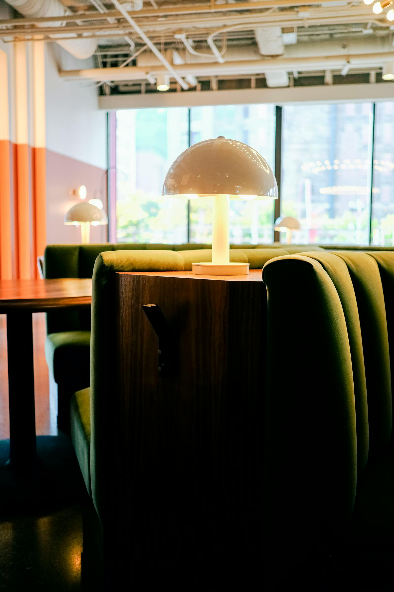

01 / 您的品牌账号
账号代运营
通过企业自己的账号持续积累品牌内容。账号所有权归您；我们依据您的 brief 或双方商定的计划准备中文内容。
- 每个按月服务周期可选择 4 篇或 8 篇笔记。
- 单篇内容规划、中文文案、标题及相关关键词。
- 筛选并进行基础整理，使用您提供的图片或视频。
- 在约定 brief 内，每篇最多三轮修改。
- 每篇内容经您确认后再发布。

悉尼小红书运营与推广
通过适合您业务的中文内容，连接悉尼本地华人社区与留学生。我们可以运营您的小红书账号，也可以通过自己的账号介绍您的餐厅或本地体验；微信支持则根据需要另行商定。
两种合作方式
通过企业自己的账号持续积累品牌内容。账号所有权归您；我们依据您的 brief 或双方商定的计划准备中文内容。
通过 Go Marketing 的小红书账号 GG Takes You Around Sydney 介绍您的业务。您无需自行运营一个小红书账号。
服务选项
您可以先比较以下合作方式。价格请联系我们咨询；具体内容、时间安排和可选支持会在书面方案中确认。
适用于餐饮、零售、美容、地产、教育及本地服务。内容基于您提供的 brief 或商定计划；敏感行业需另行评估适用性。
采用 6 个月或 12 个月固定期限协议，按月度服务周期计费，服务期限从首篇发布起算。账号整体策略、报告、复盘会议、私信与评论处理、付费投放及进阶制作属于可选服务，不默认包含。
可选的账号基础设置包括中文名称与简介、企业基本信息、现有 logo 整理、发布设置，以及平台支持的一条标准自动回复。注册、认证费用和新品牌设计另行安排。
符合条件的餐厅客户可沟通初始 1–2 页中文菜单翻译及我们微信渠道上的基础推广信息。赠送菜单需保留 Go Marketing 的小型微信名称与二维码；托管、后续更新、复杂菜单及额外制作另行确认。
每篇在约定 brief 内最多修改三轮。若客户延迟提供素材或反馈，可协商调整排期，但月费不自动减少。反馈截止时间、顺延及新增工作会提前商定。不回复不等于同意，未确认的内容不会自动发布。这项客户延误安排不决定未按约交付工作的补救方式。
适合日常餐厅、咖啡馆、烘焙店和甜品店。每篇围绕一个具体到店理由展开，例如招牌菜、新菜单或季节活动。
基础报告通常在发布约两周后提供。三个月内升级时，原有的一篇可计入三篇或五篇总量，分别剩余两篇或四篇。升级前确认剩余排期和报价。平台付费推广不默认包含。
适合景点、活动、酒庄、娱乐场所、游船及本地体验。核心受众是悉尼本地华人社区和留学生；若与业务相关，也可考虑国际游客。
以上为总篇数，不是每月篇数；发布周期另行商定。包含基础报告，通常在发布约两周后提供。不承诺最低浏览量或预订量，付费投放需另行确认。旅游是可考虑的受众方向，不是现行独立套餐。
配图用于说明服务场景，并非客户案例。相关项目示例仅在授权允许的情况下，于咨询中作部分展示。
平台角色
适合用户在还不熟悉品牌时，通过推荐、本地体验、生活方式内容或服务比较来先认识企业。
适合企业已经有现有客户、社区、复购关系或持续更新理由，需要维持更温和的长期沟通。
适合在平台内容带来兴趣之后，帮助用户确认信息、理解服务并采取更专业的下一步。
适合哪些企业
适合顾客会通过体验型内容和本地推荐来决定去哪里消费、如何选择和是否值得尝试的业务。
适合需要更温和、更实用、也更容易被信任的持续内容，而不仅是广告式宣传。
适合需要避免把微信和小红书当成同一个平台，或直接把主流平台内容翻译过去的企业。
合作流程
告诉我们您的业务、所在地、目标受众、账号现状和已有素材。
书面确认发布账号、内容数量、时间安排、报价及可选支持。
由您核对文案、企业信息、优惠条件及发布安排，并确认内容。
确认后发布。我们账号的推广包含基础报告；代运营报告另行商定。
常见问题
账号代运营是在您的企业账号上开展，账号所有权仍归您。如果选择通过 GG Takes You Around Sydney 推广，则由我们在自己的账号发布，您无需自行运营另一个账号。
价格请联系我们咨询。报价会考虑发布账号、篇数与内容形式、已有素材、排期、制作需求及额外支持。开始前会提供书面范围和报价，不在官网公开价格。
所有发布在我们账号上的推广套餐都含基础表现报告，通常在发布约两周后提供；如您提出其他时间，可另行商定。您自己账号的报告、会议、私信和评论处理属于代运营的可选服务，不默认包含，也不是全天候客服。
代运营内容在约定 brief 内，每篇最多三轮修改。客户延迟提供素材或反馈时，可以商定调整排期，但不自动减免月费。截止时间和顺延安排会提前确认；不回复不代表同意，未确认的内容不会自动发布。新方向或额外工作需另行商定。
可以。图文笔记建议精选 3–10 张图片，这并非平台张数限制。视频优先简短、有重点；若内容具有宣传或教育价值，可视内容安排至两分钟，但不保证受众会看完。新增拍摄、视频制作和进阶剪辑需另行确认范围。
Premium 包含平台付费广告，具体目标、平台指标、评估期限和未达目标的处理方式在书面方案中确认。其他套餐不默认包含付费推广。浏览量和曝光量不等于独立客户，任何套餐都不保证咨询、预订或销售结果。
在授权允许的范围内，我们可以在咨询中私下展示部分相关示例。客户身份、保密项目细节及受保护素材不会未经授权公开或分享。历史表现也不能视为您的推广结果预测。
告诉我们您的业务、所在地、账号现状和当前重点，我们会建议合适的起点，并根据商定的工作准备报价。